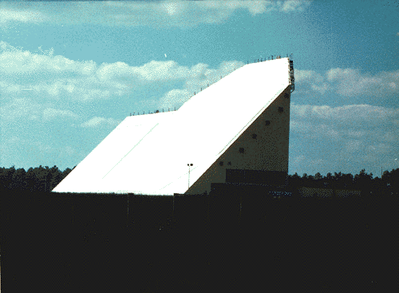
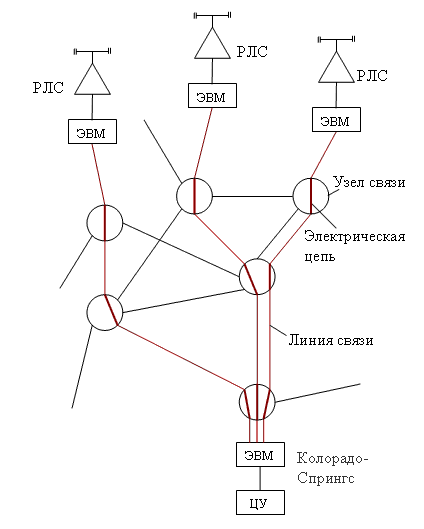
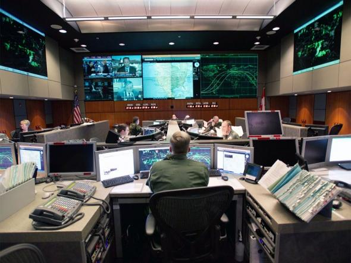
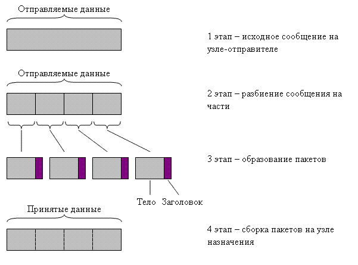
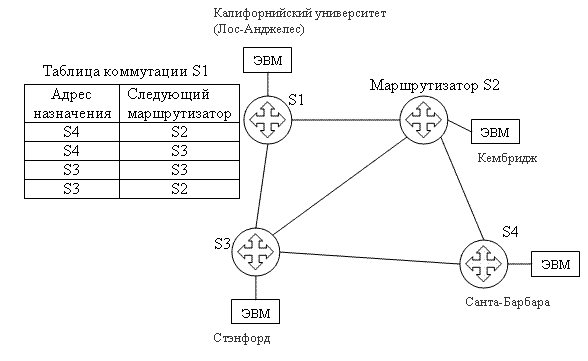

Информация нужна человеку для выживания в мире, для принятия правильных решений. Он постоянно получает информацию из окружающего мира с помощью органов чувств, хранит её в своей памяти, анализирует с помощью мышления. Например, мы подходим к дороге, чтобы перейти через неё, но не знаем, свободна ли она. Мы смотрим налево, направо и оцениваем наличие машин, то есть собираем о них информацию. Только обладая этой информацией, мы можем безопасно перейти дорогу.
Наш век иногда называют веком информации, давайте подумаем, почему. В прошлом веке говорили о научно-технической революции, потому что постоянно создавались новые виды техники: телевизор, магнитофон, космические ракеты, создание пластмассы, ядерного оружия и другие технические новинки. Государство становилось сильным и могущественным не потому, что у неё много населения, или богатые ископаемые, а потому, что владеет современными технологиями. Примеры тому — восстановление нашей страны после второй мировой войны, стремительный взлёт экономик Японии, Федеративной Республики Германия. А технология — это и есть информация о том, каким образом изготавливается продукт, последовательность действий. Новую технологию часто называют на американский манер know how (знаю как).
В век глобализации всё больше возможностей открывается для ведения бизнеса, углубления специализации и кооперации. Одинаковый товар можно купить у разных поставщиков, доставить его разными видами транспорта и разными маршрутами, воспользовавшись услугами разных транспортных компаний. Для выбора оптимального варианта необходима информация о стоимости, сроках, качестве, дополнительных условиях.
Таким образом, в современном обществе важным ресурсом является информация, использование которой базируется на информационных и коммуникационных технологиях. Раньше роль этих технологий выполняли газеты, телеграф, телефон, радио, телевидение. Компьютерные сети появились сравнительно недавно и привнесли в нашу жизнь нечто новое — неисчерпаемые запасы информации, созданные цивилизацией. Этот эффект особенно проявился в середине 90-х годов, когда стало ясно, что возможности свободного доступа к информации и быстрому общению очень ценятся людьми.
Чтобы хорошо представлять современное состояние Интернет, полезно рассмотреть историю его происхождения.
| Рис.1. Запуск космической ракеты |
|  |
| Рис.2. Радиолокационная станция с фазированной антенной решёткой |
Корни Интернета уходят ещё в 50-е годы, к началу гонки вооружений между СССР и США. В это время в обеих странах были созданы атомные бомбы и развёртывались работы по созданию средств их доставки — баллистических межконтинентальных ракет (рис.1).
США начали создавать систему раннего обнаружения баллистических ракет. Система раннего оповещения NORAD была построена на севере Канады и включала в себя несколько радиолокационных станций, оснащённых мощными компьютерами (рис.2). Радиолокационная станция (РЛС) с помощью электромагниных волн обнаруживает цель (подлетающую балистическую ракету или стратегический бомбардировщик) и измеряет её координаты. Для обработки радиолокационной информации каждая РЛС имеет электронную вычислительную машину (ЭВМ). В случае обнаружения угрозы по линиям связи передаётся сигнал тревоги в центр управления, расположенный внутри страны.
Американцы соединили ЭВМ с помощью обыкновенных телефонных сетей, по которым передавали не человеческую речь, а импульсы, кодирующие числа. Последовательность чисел складывались в файлы (то есть записи, или кодограммы). В середине 60-х годов был запущен центр управления NORAD, и его компьютер начал обрабатывать файлы, поступающие от ЭВМ с севера континента по телефонным каналам. Так как расстояние составляет несколько тысяч километров, то сигнал проходил через многочисленные узлы связи.
|  |  |
Рис. 3. NORAD — первая компьютерная сеть |
Рис. 4. Центр управления NORAD |
В старых аналоговых телефонных сетях для того, чтобы начать передачу, необходимо с участием людей на каждом узле связи выполнить соединение (коммутацию), в результате которой создается протяжённый составной канал связи. Если канал на каком-то участке разрывается, связь прекращается. Для обхода повреждения человек (техник) должен выбрать другой маршрут и скоммутировать новый составной канал. Ручная коммутация каналов — главная слабость этой технологии.
Таким образом, к середине 60-х годов в США была создана первая компьютерная сеть NORAD. Она была построена на основе телефонных сетей с коммутацие каналов. Но она ещё не была тем самым Интернетом, о котором мы говорим. Интернет возник на основе технологии коммутации пакетов.
Американские военные были не совсем довольны своей компьютерной сетью. При выходе из строя какого-либо участка на линии связи файлы от радиолокационной станции терялись на несколько часов, пока её не перекоммутируют на нескольких узлах связи. Такие задержки для противоракетной обороны недопустимы.
Л. Клейнрок |
В 1961 году Леонард Клейнрок опубликовал статью по пакетной коммутации, при которой файлы разбивались на части и передавались различными путями через сеть. Сеть должна иметь несколько альтернативных маршрутов между любыми двумя узлами. Данные должны передаваться в цифровой форме в виде пакетов – дискретных фрагментов, имеющих некоторую унифицированную структуру. В частности, пакет должен содержать информацию о том, откуда и куда он направляется (адрес), а «тело» пакета нести в себе полезную информацию.
|  |
Рис.5. Разбиение потока данных на пакеты |
При коммутации пакетов файлы разбиваются на кусочки (пакеты). Каждый
пакет подобно почтовому конверту имеет оболочку и адрес.
Пакет передаётся по линии связи к ближайшему коммутатору, который,
прочитав адрес, передаёт пакет далее.
Получается нечто вроде цепочки. Пакеты передаются по
сети, шаг за шагом приближаясь к получателю.
За продвижение пакетов от отправителя к получателю отвечают маршрутизаторы. Маршрутизатор — сетевое устройство, которое соединяет (коммутирует) узлы сети , когда это необходимо для передачи пакета. Маршрутизатор имеет таблицу коммутации и способен выбирать из разных вариантов наиболее рациональный маршрут для продвижения пакета в сторону пункта назначения. Если связь с ближайшим коммутатором прерывается, то пакеты автоматически направляются по другому маршруту.
Таким образом, технология коммутация пакетов имеет преимущество по сравнению с коммутацией каналов: автоматическое восстановление связи в случае отказа на линии.
Разработка и испытание сети с коммутацией пакетов была поручена Калифорнийскому университету в Лос-Анджелесе, Стэнфордскому исследовательскому центру, Университету штата Юта и Университету штата Калифорния в Санта-Барбаре. В 1969 году началось объединение компьютеров четырёх университетских и научных центров в единую сеть.
Было разработано устройство для связи между компьютерами через телефонную сеть (сейчас такое устройство называют маршрутизатором). Тогда это устройство называлось IMP (Interface Message Processor) и было размером с комнату. Одно такое устройство было доставлено в Калифорнийский университет в Лос-Анджелесе. Второе устройство IMP было доставлено в исследовательский центр Стэнфордского университета. 29 октября 1969 года Леонард Клейнрок вместе со своей группой в Калифорнийском университете соединил два компьютера (растояние между ними было 500 км) в сеть.
|  |
Рис.6. ARPANET – первая сеть с коммутацией пакетов |
Таким образом, в результате эксперимента по созданию сети с коммутацией пакетов была создана надёжная, автоматически восстанавливаемая сеть цифровой связи. По этой сети теперь можно было передавать не только военные кодограммы, но и файлы гражданского назначения. Arpanet быстро завоевала симпатии ученых и инженеров, поскольку трудно переоценить возможность быстрого обмена данными при ведении совместных работ подрядчиками Пентагона, удаленными друг от друга на весьма приличные расстояния вплоть до ситуации, когда абоненты сети располагались в противоположных концах страны. Быстрая и качественная связь, базирующаяся на прекрасно развитой сети телефонных линий связи США, весьма существенно влияла на ход разработок, повышая их эффективность и сокращая затрачиваемое время.
В 1971 году Рэй Томлисон разрабатывает систему электронной почты и пишет программу почтовых объявлений – первый почтовыи клиент, которые можно было передавать по сети. Он же предложил использовать знак @, которыи и по сей день является неотъемлемой частью любого электроного адреса. Интересно, что в разных странах его называют совершенно по-разному: у нас – «собачка», в Дании – «придаток слона», в Греции – «маленькая утка», а в Германии – «висящая обезьяна». Чего-чего, а юмора програмистам всего мира занимать не приходится.
В 1972 году были проведены первые международные подключения к ARPANET. К сети подключились машины из Англии и Норвегии . Тогда же была запущена спутниковая линия связи с Гавайским университетом. В 1977 году число хостов достигло ста. Через спутниковые каналы сеть была связана с Западной Европой.
В то время разрабатывались межсетевые протоколы, так как PP-протоколы (Point-to-Point – протоколы типа Точка-Точка) уже не могли обеспечивать подключение такого большого количества различных по структуре локальных сетей, желающих подключиться к ARPANET. Состоялась демонстрация взаимодействия ARPANET и протоколов радиопередачи даных (Packet Radio NET), Ethernet и SATNET (SATellite NETwork, передача даных через спутник) на базе TCP/IP. Осенью 1977 года когда через TCP/IP несколько сетей объединились с ARPANET, родился Интернет!
Тим Бернес-Ли |
До начала 80-х Интернет казался обывателю невообразимо сложной штукой: удобные программы для работы в нём отсутствовали, из-за чего приходилось заучивать большое количество специальных команд. Применить гипертекстовые ссылки для навигации в Сети догадался англичанин Тим Бернес-Ли. Ему необходимо было создать единый программный интерфейс для компьютеров, и в 1989 году он представил программу «World Wide Web» (всемирная паутина), а в августе 1991-го бесплатно выложил программу в сети. Она «взорвала» сетевое сообщество своей наглядностью и простотой использования. Отныне «гулять» по Интернету мог любой, умеющий щёлкать мышкой по экрану. Программисты ринулись создавать свои веб-страницы, а объём передаваемой в новом стандарте информации, как и количество подключаемых к Интернету компьютеров, растёт по часам.
Таким образом, необходимо различать Интернет и Всемирную паутину (WWW, веб). Интернет возник раньше и явился технологической основой для WWW. Кроме WWW Интернет обеспечивает также работу электронной почты (E-mail), передачу файлов (FTP), и некоторых других сервисов.
| Создание первой компьютерной сети NORAD (США) | Середина 60-х годов |
| Первая сеть с коммутацией пакетов ARPANET (США) | 1969 год |
| Создание электронной почты (США) | 1971 год |
| Рождение Интернет (США, Западная Европа) | 1977 год |
| Создание WWW (Западная Европа) | 1991 год |